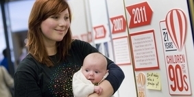

International Women's Day 2022
Find out what events we have organised to mark International Women's Day 2022 and learn more about our dedication to #BreakTheBias.
We have a proud history of giving women equal opportunities and are committed to promoting equality through attracting and promoting talented female staff. Women, both past and present, can inspire our teaching and work today.
Celebrate International Women's Day 2022 with us
The theme for this year's International Women's Day (Tuesday 8th March 2022) is #BreakTheBias. As a University, we're proud to be dedicated to breaking gender bias not just on this day, but everyday.
To celebrate our ongoing commitment to breaking gender bias, we invite you to watch our Spotlight: IWD series. Hear from champions across our University community, past and present, who are committed to breaking gender bias.
#BreakTheBias
Share in our celebrations by joining one of our International Women's Day events, including the opportunity to hear from Visiting Professor Mamokgethi Phakeng or discover our student's experiences in our latest blogs.
Read the blog
Find out what University staff, students and alumni think about gender equality on our blog.
Bristol University women are excellent examples of the 'go-ahead spirit' of the female sex in every University in England.
Our history
We were the first higher education institute in England to admit women on an equal basis to men. Find out more about key women in our history and gender equality today.
 Tackling COVID-19
Tackling COVID-19
Meet the women from across the University who have been using their expertise to tackle the pandemic, from carrying out world-class research to helping on the frontline of the NHS.
Spotlight on...
We shine the spotlight on some of Bristol's wonderful women, learning about their experiences and celebrating their achievements.
 Our research
Find out about how our gender-related research has had an impact on policy, law and learning.
Vote 100 portraits
View a series of ten portraits, specially-commissioned to celebrate notable Bristol women who have changed the institution – and the world. Read more about the project in our press release.
Gender in the workplace
Today we continue to strive for gender equality in the workplace.